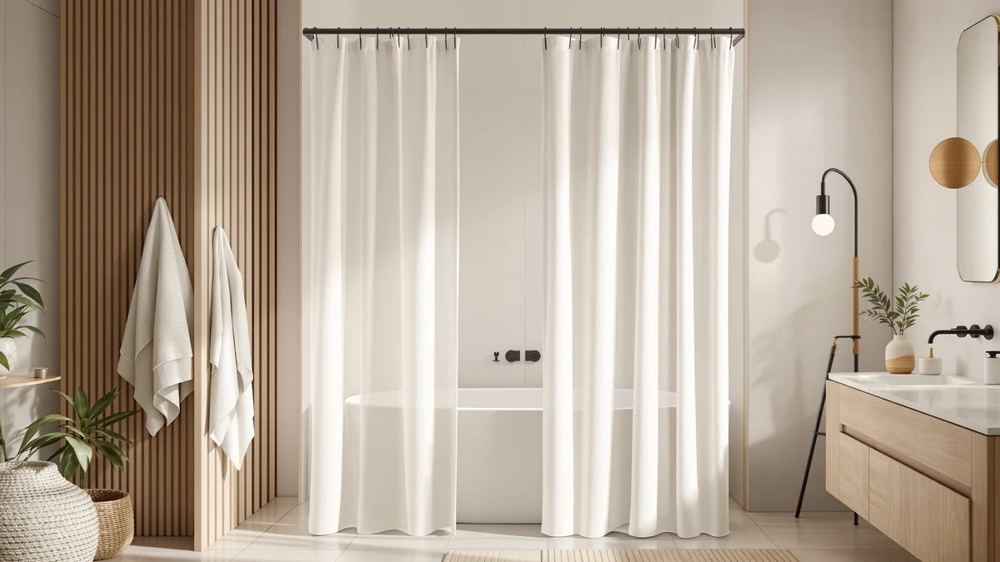

Conbo Mio No Hook Review (2026): Worth It?
Prices and picks verified as of September 2026. Independent, reader-supported reviews.


Quick Answer
In this Conbo Mio No Hook review, the $32.99 hotel-style set pairs a see-through top window with a removable snap-in liner, though it is a recent listing that has not built up a public rating or review count yet. If you would rather buy from a listing with a longer track record, the BOODII No Hook Shower Curtain below carries a 4.8-star average across 2,673 verified reviews at a similar price.
Our pick: Conbo Mio No Hook Shower, $32.99 Check Price on Amazon
Bottom line: our top pick is the Conbo Mio No Hook Shower Curtain with Snap in Liner Set at $32.99.
Things to Know Before You Buy
- The Conbo Mio No Hook Shower Curtain bundles a polyester curtain with a removable snap-in liner in one $32.99 purchase, using flex-on rings instead of traditional hooks.
- This listing was added in September 2026 and does not show a public rating or review count yet, unlike two of the three alternatives compared here.
- All four products in this comparison use a hooks-free or accessory design, from split-ring curtains to a stainless steel tension rod that upgrades the rod itself.
- The BOODII No Hook Shower Curtain carries the strongest review record among the four, at 4.8 stars across 2,673 verified reviews.
- Prices across the lineup sit close together, from $31.99 to $32.99, so liner design and review history matter more than budget when you choose.
This Conbo Mio No Hook review looks at whether the $32.99 hotel-style curtain and liner set is worth choosing over three alternatives that solve the same hooks-free bathroom setup in different ways. The set pairs a polyester curtain with a snap-in liner and a see-through top window, bundling both pieces into one price instead of asking you to shop for a curtain and a liner separately. Because it is a newer listing, it does not carry the review history that some longer-established alternatives have built up, and that gap is worth weighing before you buy.
The appeal of a hooks-free design is straightforward. Flex-on rings or split rings let the curtain slide directly onto the rod, so you skip the separate bag of curtain rings that trips up a lot of first-time buyers. Conbo Mio pairs that hooks-free mounting with a liner sewn to snap in and out for washing, a combination that saves a second purchase if you do not already own one. Whether that convenience beats a proven, heavily reviewed alternative is what the rest of this Conbo Mio No Hook review works through, alongside three other options in the same price range.
Why You Should Trust Us
Ilane Tall covers bath and home textiles for Best Shower Curtains, focusing on how hooks-free curtains, liners, and mounting hardware hold up in daily use rather than how they read on a product page. For this Conbo Mio No Hook review, we checked the manufacturer's listed materials, dimensions, and mounting design against the product title, then compared the price and construction against three alternatives that solve a similar hooks-free setup in different ways. We do not run a fake testing lab, and nothing in this article is sponsored by Conbo Mio or any competing brand. Every price, material, and review count here comes from the product listing at the time of publishing.
Our Research Experience
Our approach to this Conbo Mio No Hook review relies on published specs and verified owner feedback rather than physical use of the product. We compared the manufacturer's listed materials, the flex-on ring mounting system, and the snap-in liner claim against three alternatives built around a related but different approach to hooks-free bathroom setup. Because this listing does not carry a public rating or review count yet, we weighed it mainly on construction, price, and stated features rather than reviewer sentiment, and we say so plainly instead of inventing a score it has not earned. That is also why the BOODII alternative below leans more heavily on owner feedback: it has a review history of its own to draw from, and we treated that as a meaningful part of the comparison.
Overview & Specs

Conbo Mio No Hook Shower
What we like
- Flex-on rings slide directly onto the rod, so there is no separate bag of curtain hooks to buy
- Removable snap-in liner simplifies washing and replacement
- See-through top window lets light into the shower while the lower panel stays private
- Polyester construction is water-repellent, anti-wrinkle, and heat-resistant according to the listing
Flaws but not dealbreakers
- No public rating or review count yet, so there is less buyer feedback to weigh than the BOODII alternative below
- Hotel-style white check pattern is more traditional than the botanical or solid-color alternatives
- Standard 71-by-74-inch sizing may run short on an extra-tall shower rod
| Material | Polyester / PEVA |
| Size | 71"W x 74"L (Pack of 1) |
The core idea behind this Conbo Mio No Hook review is convenience through a hooks-free mount. Instead of buying curtain rings separately and threading them through grommets, the $32.99 set uses flex-on rings sewn into the curtain that clip straight onto the rod, then pairs that with a snap-in liner so you are not shopping for a second product to keep water inside the tub.
The tradeoff is review history. Because this exact listing does not carry a public rating or review count, buyers are working from the manufacturer's stated materials, hotel-style white design, and see-through top window rather than a track record of verified owner feedback. The polyester construction and removable liner are common, proven choices in this category, so the design itself is not unusual. What is missing is the kind of large sample size that lets you check for recurring complaints about fading or liner separation before you buy, which is exactly the gap the BOODII alternative below fills with over 2,600 verified reviews. At 71 inches wide by 74 inches tall, the panel also matches the RiverDream alternative's footprint almost exactly, so the decision between the two comes down to color, weight, and review history rather than fit.
What We Liked
The hooks-free mounting is the standout in this Conbo Mio No Hook review. Flex-on rings sewn into the curtain slide straight onto the rod, cutting out a step that trips up a lot of first-time buyers who only discover after checkout that curtain rings are sold separately. Pairing that with a snap-in liner means both pieces install and come apart together for washing, instead of managing a curtain and a loose plastic liner as two unrelated items.
The see-through top window also does real work here. A strip of clear vinyl above the opaque white panel lets daylight into the shower stall and keeps the room from feeling closed in, while the lower two-thirds still block the view from outside the tub. Paired with the hotel-style white check pattern, it reads closer to a boutique hotel bathroom than a typical drugstore curtain.
What Could Be Better
The lack of a public rating is the clearest gap in this Conbo Mio No Hook review. Every alternative compared here either carries a review count already or serves a different enough purpose that reviews matter less, and this listing has neither yet, at least at the time of publishing. That does not mean the curtain is flawed, but it does mean you are buying on stated materials and brand description rather than a large sample of verified owner experience.
The white check pattern is also a narrower fit than the botanical print or solid black alternatives. A hotel-style white curtain suits a neutral or spa-themed bathroom, but it will not coordinate with a bolder color scheme the way the BOODII eucalyptus print or the RiverDream black waffle weave can.
Who Is It For?
This Conbo Mio No Hook Shower Curtain fits a specific kind of buyer well: someone who wants a hotel-style white bathroom, values a hooks-free setup, and would rather buy a curtain and liner as one bundle instead of shopping for pieces separately.
It is a weaker fit if a large body of verified reviews matters to your buying decision, or if you want a bolder pattern or color than a white check design. For either of those situations, the BOODII No Hook Shower Curtain below, backed by 2,673 verified reviews, gives you more data and a stronger visual statement to work from before you buy.
Alternatives to Consider
The Conbo Mio No Hook Shower Curtain solves the hooks problem with flex-on rings and a bundled liner, but that is not the only way to skip a separate bag of curtain rings. We compared it against a heavyweight waffle curtain with split rings, a decorative curtain with a stronger review record, and a stainless steel tension rod for anyone whose rod, not their curtain, needs an upgrade. All three sit within two dollars of the Conbo Mio's $32.99 price, so none of them asks you to trade budget for a different set of tradeoffs.

Editor’s Pick
RiverDream Heavyweight Waffle No Hook
A black, heavyweight waffle-weave curtain that uses split rings instead of hooks, so it slides onto the rod the same way the Conbo Mio does. Like the Conbo Mio, it does not carry a public rating yet, but the thicker waffle fabric and included snap-in liner make it a heavier-duty option at the same $32.99 price.
$32.99
Check Price on Amazon
Best Value
BOODII No Hook Shower Curtain
A no-hook curtain with a snap-in liner and an eucalyptus botanical print, backed by 2,673 verified reviews at a 4.8 average, the strongest review record of the four products in this Conbo Mio No Hook review. Choose this if a proven track record matters more than the hotel-style white look.
$32.28
Check Price on Amazon
Premium Choice
BRIOFOX Tension Curtain Rod 43-73
Not a curtain but a 304 stainless steel tension rod rated for up to 30 pounds, useful if your existing rod is the weak link rather than your curtain. Pair it with any of the hooks-free curtains above if your current rod slips or sags under a heavier waffle-weave or lined panel.
$31.99
Check Price on AmazonFrequently Asked Questions
What comes with the Conbo Mio No Hook Shower Curtain?
The set includes a polyester curtain with flex-on rings built in, plus a removable snap-in liner and a see-through top window section. You do not need to buy separate hooks or a separate liner.
Is the Conbo Mio No Hook Shower Curtain machine washable?
The listing describes the polyester panel as washable, and the liner snaps out for separate cleaning. Check the care tag on your unit before a hot wash or dryer cycle, since liner materials tend to be more heat-sensitive than the curtain fabric.
Does the Conbo Mio No Hook curtain fit a standard shower rod?
Yes. At 71 inches wide by 74 inches tall, it fits a standard tub and shower rod, and the flex-on rings clip onto a round rod without removing it first.
Final Verdict
The verdict on this Conbo Mio No Hook review comes down to what you value more: a hotel-style bundle at a fair price or a deeper review history. Conbo Mio's $32.99 set is the more distinctive buy for anyone who wants a hooks-free curtain and liner solved in one step with a see-through window, even without a public rating to lean on yet. If verified feedback from thousands of other buyers matters more to your decision, the BOODII No Hook Shower Curtain is the stronger pick in this lineup, backed by 2,673 reviews at a 4.8 average for a close price.